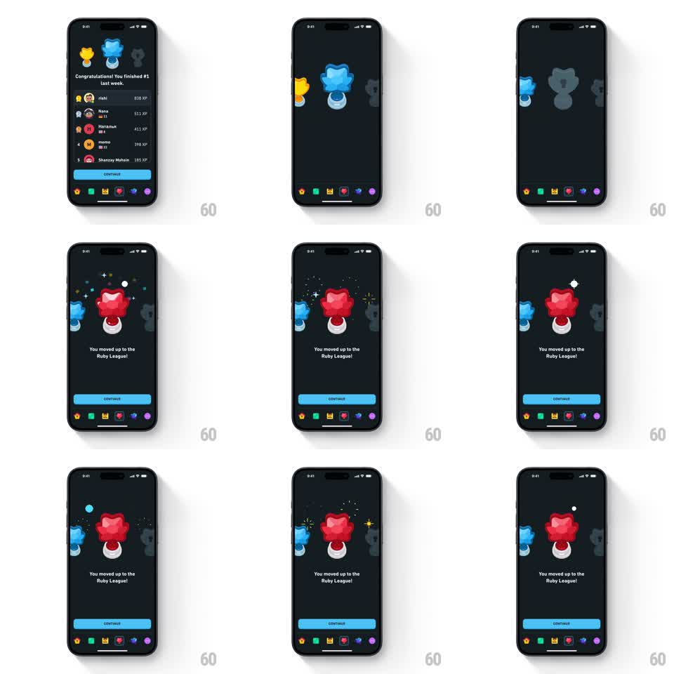

Media
Frame-by-frame

Rebuild this animation 1:1: Duolingo's Ruby League promotion reveal - from the weekly-results screen the view pushes into a dark stage where the blue trophy slides aside and the ruby trophy bursts into center with gem shards flying, then looping sparkles twinkle behind the "You moved up to the Ruby League!" line and blue CONTINUE button.

Rebuild this animation 1:1: Duolingo's Ruby League promotion reveal - from the weekly-results screen the view pushes into a dark stage where the blue trophy slides aside and the ruby trophy bursts into center with gem shards flying, then looping sparkles twinkle behind the "You moved up to the Ruby League!" line and blue CONTINUE button. ## Integration Integration: stack-agnostic spec - springs given as stiffness/damping, timed motions as duration + curve; map every value to your framework and animation library of choice. ## Scene Dark charcoal screens. Screen 1: "Congratulations! You finished #1 last week." with gold/blue/gray trophy icons and a top-5 leaderboard list, blue CONTINUE. Screen 2 (the reveal): centered ruby-red league trophy on a pedestal, the previous blue trophy shrunk and dimmed to its left, a gray silhouette trophy further right; headline "You moved up to the Ruby League!", blue CONTINUE button, tab bar. ## Motion spec Pattern: trophy reveal with shard explosion and looping sparkles. - Push transition in (300ms ease-in-out). - The blue trophy slides left and shrinks (scale 1.0 -> 0.6, 350ms, ease-in-out) while the ruby trophy scales in at center (0 -> 1.15 -> 1.0, spring ~320/16, ~450ms). - On the ruby trophy's landing, ~10 gem shards explode outward (radial, 500ms life, gravity, staggered 25ms) in red/pink tones. - Headline fades up (200ms, delayed to the landing); CONTINUE slides up (250ms ease-out) after. - Loop: 5-6 white star sparkles twinkle around the trophy (scale 0 -> 1 -> 0, 900ms each, random offsets, infinite). ## Calibration - The shard burst fires exactly on the spring's settle frame - the trophy lands and shatters attention outward. - Sparkles loop forever but stay behind the trophy (z-order), never over the headline. ## Reduced motion Ruby trophy crossfades in at center; headline and button fade in; no shards, no sparkle loop. ## Don't miss - The old blue trophy stays on stage, demoted - the hierarchy of trophies tells the promotion story. - The shard palette matches the ruby trophy (reds/pinks), not generic confetti colors.